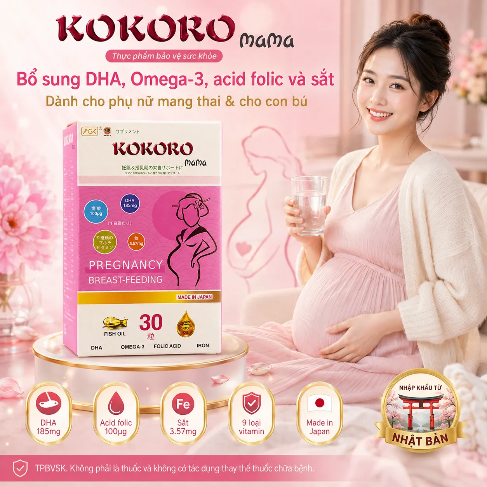

KOKORO Mama 30 Viên – Thực phẩm bảo vệ sức khỏe bổ sung DHA, Omega-3, Acid Folic, Sắt và Vitamin cho phụ nữ mang thai và cho con bú
← Tất cả sản phẩmMÔ TẢ SẢN PHẨM – KOKORO MAMA 30 VIÊN
KOKORO Mama là thực phẩm bảo vệ sức khỏe dạng viên nang mềm, sản xuất tại Nhật Bản. Sản phẩm bổ sung DHA, EPA cùng một số vitamin và khoáng chất, phù hợp cho phụ nữ mang thai và phụ nữ đang cho con bú.
CÔNG DỤNG
- Bổ sung DHA, EPA cùng một số vitamin cho cơ thể.
- Hỗ trợ tăng cường sức khỏe cho phụ nữ mang thai và phụ nữ cho con bú.
THÀNH PHẦN NỔI BẬT
Trong 01 viên nang mềm có các thành phần nổi bật:
- Dầu cá: 385mg
- Omega-3: 245mg
- DHA: 185mg
- EPA: 36mg
- Acid Folic: 100mcg
- Kẽm: 0,55mg
- I-ốt: 7,5mcg
- Magnesium oxide
- Sắt pyrophosphate, tương ứng khoảng 3,57mg sắt
- Beta-carotene
- Vitamin E
- Vitamin D3
- Vitamin C
- Vitamin B1
- Vitamin B2
- Vitamin B6
- Vitamin B12
- Nicotinic acid
Cùng các thành phần khác theo công thức được ghi trên nhãn sản phẩm.
ĐỐI TƯỢNG SỬ DỤNG
Phụ nữ mang thai và phụ nữ đang cho con bú.
HƯỚNG DẪN SỬ DỤNG
Uống 01 viên mỗi ngày.
Sử dụng theo hướng dẫn ghi trên bao bì sản phẩm.
LƯU Ý KHI SỬ DỤNG
- Không sử dụng cho người quá mẫn với bất kỳ thành phần nào của sản phẩm.
- Đọc kỹ thành phần trước khi sử dụng nếu có tiền sử dị ứng.
- Nếu đang sử dụng thuốc hoặc đang được chăm sóc y tế, nên tham khảo ý kiến chuyên môn trước khi dùng.
- Vitamin B2 có thể khiến nước tiểu tạm thời chuyển sang màu vàng.
- Để xa tầm tay trẻ em.
- Sử dụng sản phẩm đúng hướng dẫn.
Thực phẩm này không phải là thuốc và không có tác dụng thay thế thuốc chữa bệnh.
BẢO QUẢN
- Bảo quản nơi khô mát.
- Tránh ánh sáng trực tiếp.
- Bảo quản ở nhiệt độ dưới 30°C.
- Đậy kín sau khi sử dụng.
THÔNG TIN SẢN PHẨM
- Tên sản phẩm: KOKORO Mama
- Phân loại: Thực phẩm bảo vệ sức khỏe
- Dạng sản phẩm: Viên nang mềm
- Quy cách: Lọ 30 viên nang mềm
- Khối lượng viên: 870mg ± 10%
- Xuất xứ: Nhật Bản
- Sản xuất tại: Nakahon Capsule Co., Ltd
- Địa chỉ sản xuất: Yoro 1176 Isshiki, Yoro-chou, Yoro-gun, tỉnh Gifu, Nhật Bản
- Số đăng ký bản công bố: 2288/2021/ĐKSP
- Thời hạn sử dụng: 03 năm kể từ ngày sản xuất; xem hạn sử dụng trực tiếp trên bao bì
- Đơn vị chịu trách nhiệm, nhập khẩu và phân phối: Công ty TNHH Đầu tư Anh Gia Khánh
- Địa chỉ: Số nhà 28, Ngách 43/140 Đường Cổ Nhuế, Phường Cổ Nhuế 2, Quận Bắc Từ Liêm, Hà Nội
KOKORO Mama – bổ sung DHA, EPA cùng vitamin và khoáng chất cho phụ nữ mang thai và cho con bú.
Lưu ý: Thực phẩm bảo vệ sức khỏe không phải là thuốc và không có tác dụng thay thế thuốc chữa bệnh. Hiệu quả tùy thuộc cơ địa mỗi người. Hãy đọc kỹ nhãn sản phẩm và hỏi ý kiến bác sĩ/dược sĩ trước khi dùng.